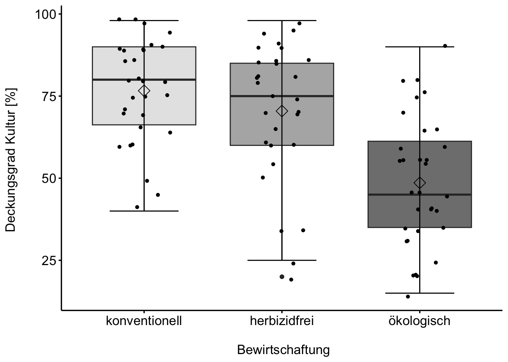
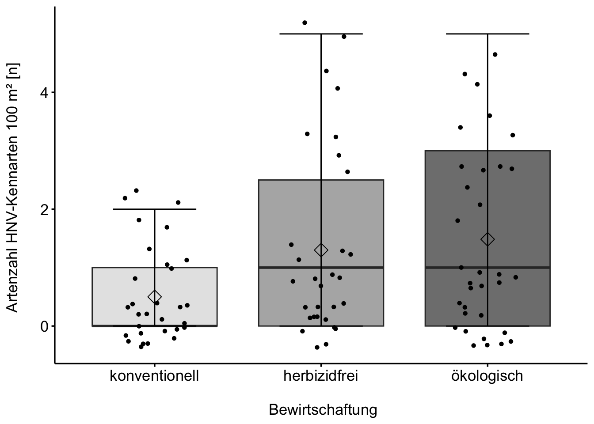
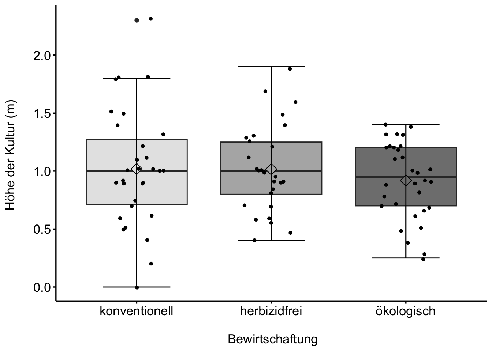

FINKA Daten 23
Bewirtschaftung, Deckungsgrad_Kultur_prozent
Deckungsgrad_Segetalarten_prozent

Hoehe_Segetalflora_m
Artenzahl_HNV_Kennarten_100_qm_n

Bluehquadrate_Mittel_Blühpflanzen_n

Hoehe_der_Kultur_m

Artenzahl_Plot_100_qm_Gräser_n

Artenzahl_Plot_100_qm_Spontanflora_n

Übersicht: Kulturfrüchte & Bluehquadrate_Mittel_Blühpflanzen_n
Interaktiv: Deckungsgrad_Segetalarten_prozent über alle Paare
Bluehquadrate_Mittel_Blühpflanzen_n
